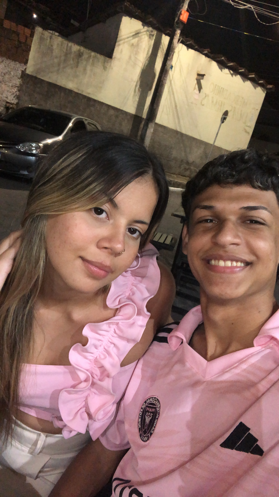
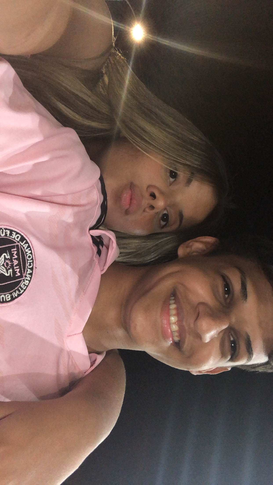

Este é um espaço onde compartilhamos momentos especiais e nossa jornada juntos.


Sobre a Música Enchanted.
Enchanted:
Amor, eu quero te dedicar essa canção da Taylor Swift. Cada palavra, cada nota, me faz pensar em você e na beleza que você carrega — não só por fora, mas principalmente por dentro. Essa música é tão linda quanto o seu sorriso, quanto o brilho do seu olhar.
Ela traduz exatamente o que sinto: o encantamento, a felicidade e a gratidão por ter te conhecido. Você é um presente que a vida me deu, e é impossível ouvir essa música sem lembrar da magia que é estar ao seu lado.
Espero que, ao ouvi-la, você sinta todo o carinho, amor e admiração que tenho por você. Você é, para mim, um verdadeiro encanto.
Lizandra,
Desde o momento em que te conheci, jamais imaginei que você se tornaria alguém tão especial pra mim. Achei que seria apenas mais uma pessoa que passaria pela minha vida… mas me enganei — e que bom que me enganei. Hoje, vejo o quanto me apeguei a você, e percebo que foi o melhor sentimento que poderia ter florescido dentro de mim.
Você me faz feliz de um jeito que é difícil explicar. Seja estando perto, me abraçando e cuidando de mim com esse jeitinho tão doce, ou até mesmo quando estamos longe e, ainda assim, sinto sua presença, seu amor, seu carinho me alcançando.
Seus beijinhos, seu olhar, suas palavras… cada detalhe seu me faz sorrir e me traz paz. Você transformou minha rotina, meu coração, minha forma de sentir. Me sinto mais leve, mais forte, mais vivo quando penso em você.
Sou imensamente grato a Deus por ter colocado você no meu caminho. E mais do que torcer, eu oro — peço com fé — para que a gente dê certo, para que essa conexão que a gente tem cresça e nos leve longe, lado a lado.
Quero te fazer feliz assim como você tem me feito. E quero que saiba: estou aqui, acreditando na gente, e disposto a viver tudo isso com você.
Eu te amo! Ass: Pedro Lucas.